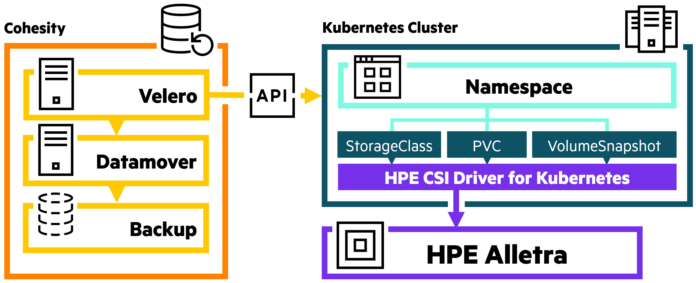
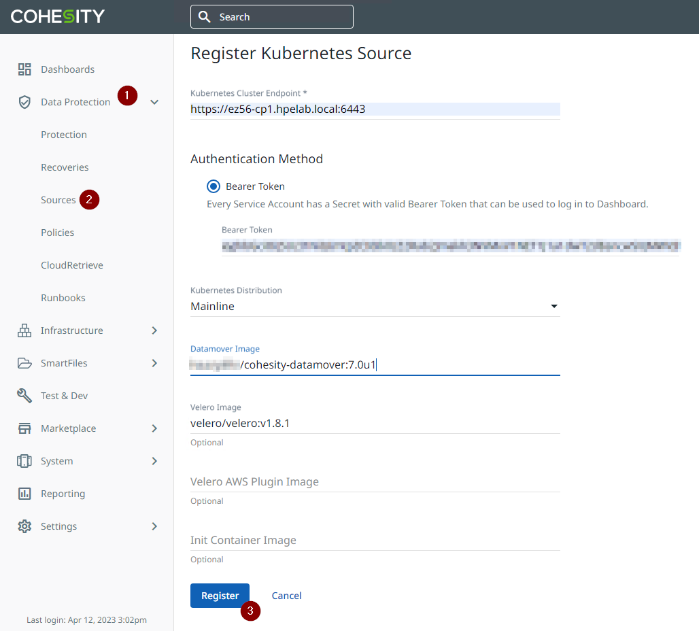
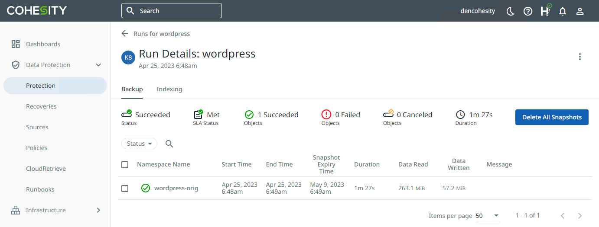
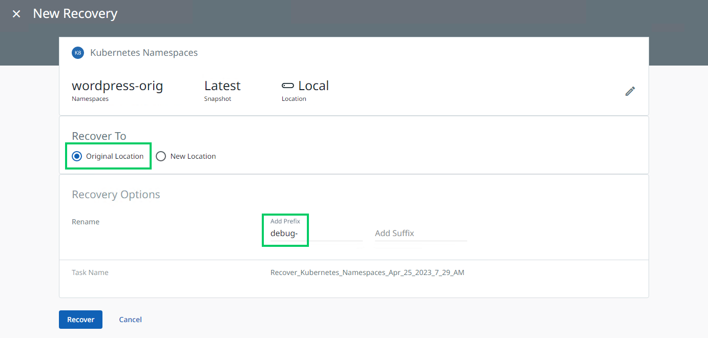

Cohesity¶
Hewlett Packard Enterprise and Cohesity offer an integrated approach to solve customer problems commonly found with containerized workloads. HPE Alletra—leveraging the HPE CSI Driver for Kubernetes—together with Cohesity's comprehensive data protection capabilities, empower organizations to overcome challenges associated with containerized environments.
This guide will demonstrate the steps to integrate Cohesity into a Kubernetes cluster and how to configure a protection policy to back up an application Namespace, a Kubernetes resource type. It proceeds to show that a backup can be restored to a new Namespace, useful for providing a test/development environment without affecting the original application Namespace.
External HPE Resources:
- Data Protection for Kubernetes using Cohesity with HPE Alletra (PDF)
- Protect your containerized applications with HPE and Cohesity (Blog)
Cohesity solutions are available through HPE Complete.
Solution Overview Diagram¶

Environment and Preparations¶
The HPE CSI Driver has been validated on Cohesity DataProtect v7.0u1. Check that the HPE CSI Driver and Cohesity software versions are compatible with the Kubernetes version being used.
This environment assumes the HPE CSI Driver for Kubernetes is deployed in the Kubernetes cluster, an Alletra storage backend has been configured, and a default StorageClass has been defined.
Review Cohesity's "Plan and Prepare" documentation to accomplish the following:
- Firewall considerations.
- Kubernetes
ServiceAccountwithcluster-adminpermissions. - Extract Bearer token ID from above
ServiceAccount - Obtain Cohesity Datamover (download) and push to a local repository or public registry.
Note
Cohesity only supports the backup of user-created application Namespaces and does not support the backup of infrastructure Namespaces such as kube-system, etc.
Integrate Cohesity into Kubernetes¶
Review Cohesity's "Register and Manage Kubernetes Cluster" documentation to integrate Cohesity into your Kubernetes cluster. Below is an example screenshot of the Register Kubernetes Source dialog:

After the integration wizard is submitted, see the Post-Registration task documentation to verify Velero and datamover pod availability.
Note
The latest versions of Kubernetes, although present in the Cohesity support matrix, may still require an override from Cohesity support.
Configure Namespace-level Application Backup¶
A Namespace containing a WordPress application will be protected in this example. It contains a variety of Kubernetes resources and objects including:
- Configuration and Storage:
PersistentVolumeClaim,ConfigMap, andSecret ServiceandServiceAccount- Workloads:
Deployment,ReplicaSetandStatefulSet
Review the Protect Kubernetes Namespaces documentation from Cohesity. Create a new protection policy or use an available default policy. Additionally, see the Manage the Kubernetes Backup Configuration documentation to add/remove Namespaces to a protection group, adjust Auto Protect settings, modify the Protection Policy, and trigger an on-demand run.
See the screenshot below for an example backup Run details view.

Demo: Clone a Test/Development Environment by Restoring a Backup¶
Review the Cohesity documentation for Recover Kubernetes Cluster. Cohesity notes, at time of writing, that granular-level recovery of Namespace resource types is not supported. Consider the following when defining a recovery operation:
- Select a protection group or individual
Namespace. If a protection group is chosen, multipleNamespaceresources could be affected on recovery. - If any previously backed up objects exist in the destination, a restore operation will not overwrite them.
- For applications deployed by Helm chart, recovery operations applied to new clusters or
Namespaceswill not be managed with Helm. - If an alternate Kubernetes cluster is chosen (New Location in the UI), be sure that the cluster has access to the same Kubernetes
StorageClassas the backup’s source cluster.
Note
Protection groups and individual Namespace resources appear in the same list. Available Namespaces are denoted with the Kubernetes ship wheel icon.
For this example, a WordPress Namespace backup will be restored to the source Kubernetes cluster but under a new Namespace with a "debug-" prefix (see below). This application can run alongside and separately from the parent application.

After the recovery process is complete we can review and compare the associated objects between the two Namespaces. In particular, names are similar but discrete PersistentVolumes, IPs and Services exist for each Namespace.
$ diff <(kubectl get all,pvc -n wordpress-orig) <(kubectl get all,pvc -n debug-wordpress-orig)
2,3c2,3
- pod/wordpress-577cc47468-mbg2n 1/1 Running 0 171m
- pod/wordpress-mariadb-0 1/1 Running 0 171m
---
+ pod/wordpress-577cc47468-mbg2n 1/1 Running 0 57m
+ pod/wordpress-mariadb-0 1/1 Running 0 57m
6,7c6,7
- service/wordpress LoadBalancer 10.98.47.101 <pending> 80:30657/TCP,443:30290/TCP 171m
- service/wordpress-mariadb ClusterIP 10.104.190.60 <none> 3306/TCP 171m
---
+ service/wordpress LoadBalancer 10.109.247.83 <pending> 80:31425/TCP,443:31002/TCP 57m
+ service/wordpress-mariadb ClusterIP 10.101.77.139 <none> 3306/TCP 57m
10c10
- deployment.apps/wordpress 1/1 1 1 171m
---
+ deployment.apps/wordpress 1/1 1 1 57m
13c13
- replicaset.apps/wordpress-577cc47468 1 1 1 171m
---
+ replicaset.apps/wordpress-577cc47468 1 1 1 57m
16c16
- statefulset.apps/wordpress-mariadb 1/1 171m
---
+ statefulset.apps/wordpress-mariadb 1/1 57m
19,20c19,20
- persistentvolumeclaim/data-wordpress-mariadb-0 Bound pvc-4b3222c3-f71f-427f-847b-d6d0c5e019a4 8Gi RWO a9060-std 171m
- persistentvolumeclaim/wordpress Bound pvc-72158104-06ae-4547-9f80-d551abd7cda5 10Gi RWO a9060-std 171m
---
+ persistentvolumeclaim/data-wordpress-mariadb-0 Bound pvc-306164a8-3334-48ac-bdee-273ac9a97403 8Gi RWO a9060-std 59m
+ persistentvolumeclaim/wordpress Bound pvc-17a55296-d0fb-44c2-968b-09c6ffc4abc9 10Gi RWO a9060-std 59m
Note
Above links are external to docs.cohesity.com and require a MyCohesity account.